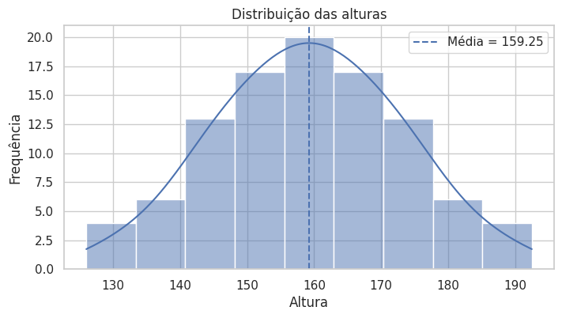
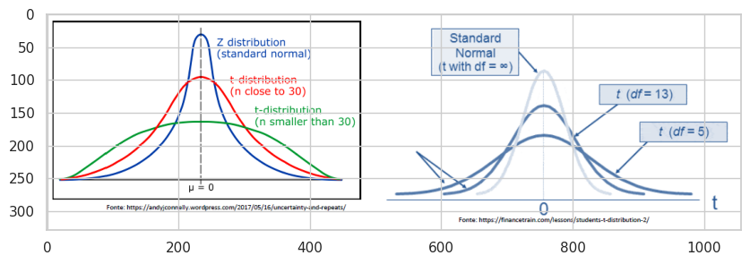
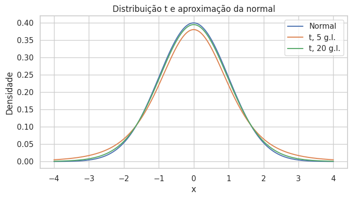
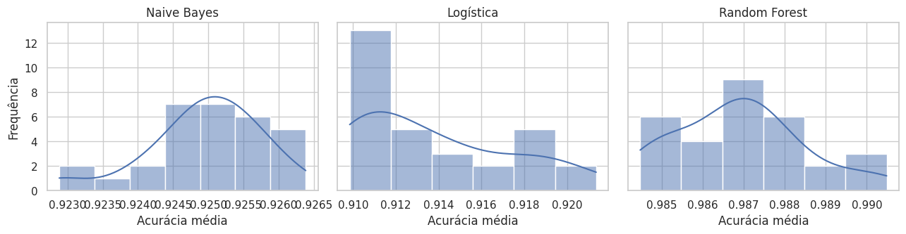
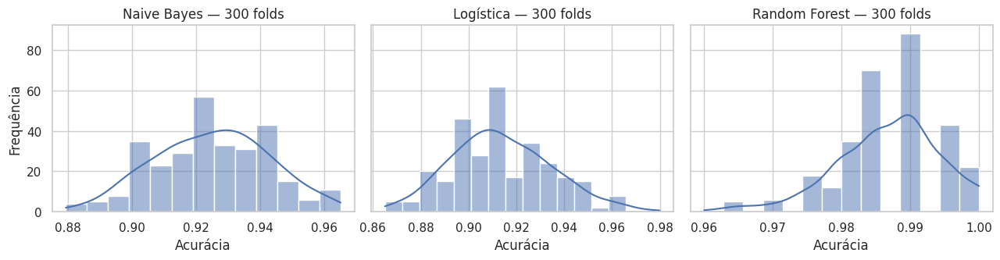
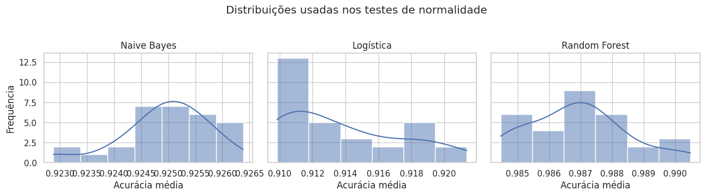
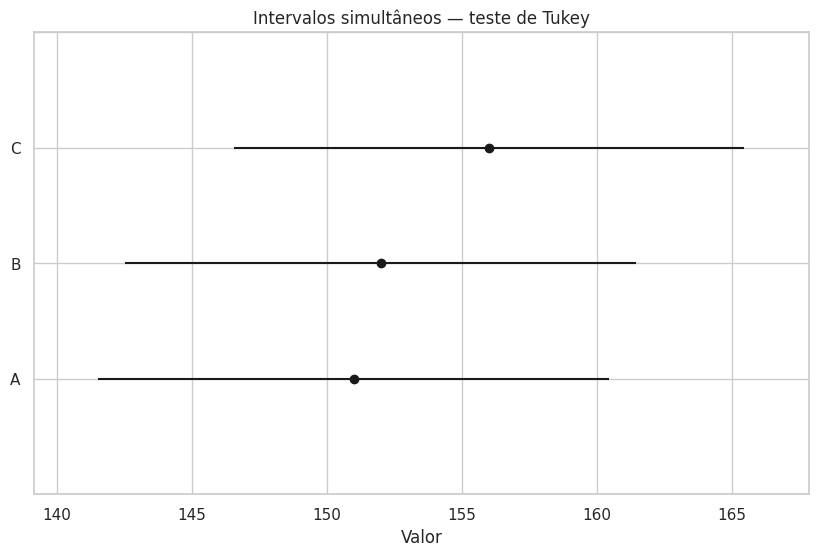

5. Testes de Hipóteses e Inferência Estatística#
Nos capítulos anteriores, descrevemos os dados e estudamos distribuições de probabilidade. Agora avançamos para a inferência estatística: usar uma amostra para avaliar afirmações sobre uma população e quantificar a incerteza envolvida.
Em ciência de dados, esse raciocínio aparece em testes A/B, comparação de modelos, campanhas de marketing e experimentos de produto. Perguntas como “a nova versão converte mais?” ou “o modelo A supera o modelo B?” exigem mais do que comparar médias observadas.
A sequência básica é:
definir a pergunta e as hipóteses;
escolher uma estatística e um teste adequado;
quantificar a incerteza com intervalos de confiança e/ou p-valores;
decidir se há evidência suficiente contra a hipótese nula;
interpretar o resultado no contexto do problema.
Este notebook começa pelos intervalos de confiança, introduz formalmente os testes de hipótese e termina com aplicações em comparação de modelos e seleção de atributos.
import math
import matplotlib.pyplot as plt
import numpy as np
import pandas as pd
import seaborn as sns
from scipy import stats
from scipy.stats import norm, t
sns.set_theme(style='whitegrid')
5.1. Intervalos de confiança#
Um intervalo de confiança (IC) fornece uma faixa de valores plausíveis para um parâmetro populacional a partir de uma amostra. Ele complementa a estimativa pontual mostrando sua incerteza.
Para a média, quando o desvio padrão populacional \(\sigma\) é conhecido, o intervalo baseado na normal é
Aqui, \(\bar{x}\) é a média amostral, \(n\) é o tamanho da amostra e \(z_{1-\alpha/2}\) é o valor crítico da normal padrão.
Na interpretação frequentista, um procedimento de IC de 95% produziria intervalos que contêm o verdadeiro parâmetro em aproximadamente 95% de muitas repetições do experimento. O nível de confiança maior produz, em geral, um intervalo mais largo.
# Dados usados no exemplo original do notebook
dados_altura = np.array([
126., 129.5, 133., 133., 136.5, 136.5, 140., 140., 140., 140.,
143.5, 143.5, 143.5, 143.5, 143.5, 143.5, 147., 147., 147., 147.,
147., 147., 147., 150.5, 150.5, 150.5, 150.5, 150.5, 150.5, 150.5,
150.5, 154., 154., 154., 154., 154., 154., 154., 154., 154., 157.5,
157.5, 157.5, 157.5, 157.5, 157.5, 157.5, 157.5, 157.5, 157.5, 161.,
161., 161., 161., 161., 161., 161., 161., 161., 161., 164.5, 164.5,
164.5, 164.5, 164.5, 164.5, 164.5, 164.5, 164.5, 168., 168., 168.,
168., 168., 168., 168., 168., 171.5, 171.5, 171.5, 171.5, 171.5,
171.5, 171.5, 175., 175., 175., 175., 175., 175., 178.5, 178.5,
178.5, 178.5, 182., 182., 185.5, 185.5, 189., 192.5
])
n = len(dados_altura)
media = dados_altura.mean()
# Apenas para ilustrar o IC-z, tratamos este valor como sigma conhecido.
sigma = dados_altura.std(ddof=0)
alpha = 0.05
z_critico = norm.ppf(1 - alpha / 2)
margem = z_critico * sigma / np.sqrt(n)
ic_z = (media - margem, media + margem)
print(f'n = {n}')
print(f'Média = {media:.2f}')
print(f'σ = {sigma:.2f}')
print(f'IC-z de 95% = ({ic_z[0]:.2f}, {ic_z[1]:.2f})')
print(f'Margem de erro = {margem:.2f}')
# Visualização da distribuição usada no exemplo
plt.figure(figsize=(8, 4))
sns.histplot(dados_altura, kde=True)
plt.axvline(media, linestyle='--', label=f'Média = {media:.2f}')
plt.title('Distribuição das alturas')
plt.xlabel('Altura')
plt.ylabel('Frequência')
plt.legend()
plt.show()
n = 100
Média = 159.25
σ = 13.65
IC-z de 95% = (156.57, 161.93)
Margem de erro = 2.68

for nivel in [0.80, 0.90, 0.95, 0.99]:
alpha_nivel = 1 - nivel
z = norm.ppf(1 - alpha_nivel / 2)
margem = z * sigma / np.sqrt(n)
print(
f'{nivel:.0%}: ({media - margem:.2f}, {media + margem:.2f}) '
f'| margem = {margem:.2f}'
)
80%: (157.50, 161.00) | margem = 1.75
90%: (157.00, 161.50) | margem = 2.25
95%: (156.57, 161.93) | margem = 2.68
99%: (155.73, 162.77) | margem = 3.52
Quando \(\sigma\) é desconhecido, substituímos o desvio populacional pelo desvio padrão amostral \(s\) e usamos a distribuição t de Student:
A distribuição t é especialmente importante em amostras pequenas, mas seu uso não depende de uma regra rígida como \(n<30\): o ponto central é que \(\sigma\) é desconhecido. Conforme os graus de liberdade aumentam, a t se aproxima da normal.
# incuir figura png do diretorio
import matplotlib.image as mpimg
img = mpimg.imread('../_static/t-student.png')
plt.figure(figsize=(10, 6))
plt.imshow(img)
<matplotlib.image.AxesImage at 0x7fdfa7dc5750>

dados_t = np.array([149., 160., 147., 189., 175., 168., 156., 160., 152.])
n_t = len(dados_t)
media_t = dados_t.mean()
s_t = dados_t.std(ddof=1)
se_t = s_t / np.sqrt(n_t)
ic_t = t.interval(0.95, df=n_t - 1, loc=media_t, scale=se_t)
print(f'n = {n_t}')
print(f'Média = {media_t:.2f}')
print(f's = {s_t:.2f}')
print(f'IC-t de 95% = ({ic_t[0]:.2f}, {ic_t[1]:.2f})')
n = 9
Média = 161.78
s = 13.56
IC-t de 95% = (151.35, 172.20)
x = np.linspace(-4, 4, 1000)
plt.figure(figsize=(8, 4))
plt.plot(x, norm.pdf(x), label='Normal')
plt.plot(x, t.pdf(x, df=5), label='t, 5 g.l.')
plt.plot(x, t.pdf(x, df=20), label='t, 20 g.l.')
plt.title('Distribuição t e aproximação da normal')
plt.xlabel('x')
plt.ylabel('Densidade')
plt.legend()
plt.show()

5.2. Testes de hipótese#
Um teste de hipótese transforma uma pergunta em duas afirmações concorrentes:
Hipótese nula (\(H_0\)): representa a ausência do efeito ou diferença que queremos detectar.
Hipótese alternativa (\(H_1\)): representa o efeito ou diferença de interesse.
Escolhemos antes do teste um nível de significância \(\alpha\), frequentemente 0,05. Ele controla a probabilidade máxima de erro tipo I no procedimento: rejeitar \(H_0\) quando ela é verdadeira.
O p-valor é a probabilidade, assumindo \(H_0\) verdadeira, de obter uma estatística de teste tão extrema quanto ou mais extrema que a observada. A regra usual é:
se \(p < \alpha\), rejeitamos \(H_0\);
se \(p \geq \alpha\), não rejeitamos \(H_0\).
Não rejeitar \(H_0\) não significa provar que ela é verdadeira. Também existe o erro tipo II, que ocorre quando não rejeitamos \(H_0\) mesmo havendo um efeito real.
O teste deve ser escolhido de acordo com o tipo de variável, o desenho do experimento e os pressupostos envolvidos.
5.2.1. Testes z, t e qui-quadrado#
O teste z é usado em problemas de média quando a variabilidade populacional é conhecida ou quando uma aproximação normal está bem justificada. Para uma amostra com média \(\bar{x}\), sob \(H_0:\mu=\mu_0\),
No exemplo abaixo, usamos a média e o desvio do conjunto original como referência e verificamos se uma nova amostra simulada apresenta média maior.
dados_originais = dados_altura.copy()
mu0 = dados_originais.mean()
sigma0 = dados_originais.std(ddof=0)
# Nova amostra simulada com aumento de 3%
dados_novos = dados_originais * 1.03
media_nova = dados_novos.mean()
n_novo = len(dados_novos)
z_stat = (media_nova - mu0) / (sigma0 / np.sqrt(n_novo))
p_value_z = norm.sf(z_stat) # teste unilateral: H1: mu > mu0
print(f'H0: μ = {mu0:.2f}')
print(f'H1: μ > {mu0:.2f}')
print(f'Z = {z_stat:.3f}')
print(f'p-valor = {p_value_z:.6f}')
H0: μ = 159.25
H1: μ > 159.25
Z = 3.500
p-valor = 0.000233
alpha = 0.05
if p_value_z < alpha:
print('Rejeitamos H0: há evidência de aumento da média.')
else:
print('Não rejeitamos H0: a evidência de aumento é insuficiente.')
Rejeitamos H0: há evidência de aumento da média.
Quando \(\sigma\) é desconhecido, o teste t é a alternativa natural para médias. Se as observações antes e depois correspondem aos mesmos indivíduos ou unidades, usamos o teste t pareado, que testa a média das diferenças entre os pares.
from scipy.stats import ttest_rel
dados_t_originais = np.array([149., 160., 147., 189., 175., 168., 156., 160., 152.])
dados_t_novos = dados_t_originais * 1.02
t_stat, p_value_t = ttest_rel(dados_t_originais, dados_t_novos)
print(f't = {t_stat:.3f}')
print(f'p-valor bicaudal = {p_value_t:.6f}')
alpha = 0.05
if p_value_t < alpha:
print('Rejeitamos H0: a média das diferenças é diferente de zero.')
else:
print('Não rejeitamos H0.')
t = -35.785
p-valor bicaudal = 0.000000
Rejeitamos H0: a média das diferenças é diferente de zero.
O teste qui-quadrado de independência trabalha com frequências em uma tabela de contingência. Ele avalia se duas variáveis categóricas estão associadas.
\(H_0\): as variáveis são independentes;
\(H_1\): existe associação entre elas.
from scipy.stats import chi2_contingency
tabela = np.array([[30, 20],
[22, 28]])
chi2_stat, p_value_chi2, gl, esperadas = chi2_contingency(tabela)
print(f'χ² = {chi2_stat:.3f}')
print(f'graus de liberdade = {gl}')
print(f'p-valor = {p_value_chi2:.4f}')
print('Frequências esperadas:')
print(np.round(esperadas, 2))
χ² = 1.963
graus de liberdade = 1
p-valor = 0.1612
Frequências esperadas:
[[26. 24.]
[26. 24.]]
5.3. Comparação de modelos de classificação#
Os mesmos conceitos podem ser usados para estudar o desempenho de algoritmos. O exemplo original compara Naive Bayes, Regressão Logística e Random Forest na base credit_data.csv.
Em vez de olhar apenas uma divisão treino/teste, repetimos uma validação cruzada de 10 folds com 30 sementes diferentes. Cada repetição produz uma acurácia média, formando uma distribuição de 30 resultados por modelo. Isso permite observar não apenas desempenho médio, mas também variabilidade.
Antes de usar esses algoritmos, precisamos apenas de uma noção do que cada um faz. O objetivo aqui não é estudar os modelos em profundidade, mas usá-los como exemplos para aplicar ferramentas estatísticas à comparação de desempenho. Eles serão retomados com mais detalhes nos capítulos de Machine Learning.
Naive Bayes: classificador probabilístico baseado no Teorema de Bayes. A versão usada aqui assume, de forma simplificada, independência condicional entre as variáveis.
Regressão Logística: apesar do nome, é muito utilizada para classificação. O modelo estima a probabilidade de uma observação pertencer a determinada classe.
Random Forest: combina várias árvores de decisão e agrega suas previsões, reduzindo a dependência de uma única árvore.
Neste ponto, basta guardar a ideia central: modelos diferentes podem produzir desempenhos diferentes e esses desempenhos variam conforme os dados usados na avaliação. Essa variabilidade é justamente o que queremos analisar estatisticamente.
from sklearn.ensemble import RandomForestClassifier
from sklearn.linear_model import LogisticRegression
from sklearn.model_selection import KFold, cross_val_score
from sklearn.naive_bayes import GaussianNB
credit = pd.read_csv('data/credit_data.csv').dropna()
X_credit = credit.iloc[:, 1:4].values
y_credit = credit.iloc[:, 4].values
# 30 médias: uma média para cada repetição da validação cruzada
resultados = {
'Naive Bayes': [],
'Logística': [],
'Random Forest': []
}
# 300 scores: 30 repetições × 10 folds, preservando a ideia do notebook original
resultados_folds = {
'Naive Bayes': [],
'Logística': [],
'Random Forest': []
}
for i in range(30):
kfold = KFold(n_splits=10, shuffle=True, random_state=i)
modelos = {
'Naive Bayes': GaussianNB(),
'Logística': LogisticRegression(max_iter=1000),
'Random Forest': RandomForestClassifier(random_state=i)
}
for nome, modelo in modelos.items():
scores = cross_val_score(modelo, X_credit, y_credit, cv=kfold)
resultados[nome].append(scores.mean())
resultados_folds[nome].extend(scores)
resultados = {
nome: np.asarray(valores)
for nome, valores in resultados.items()
}
resultados_folds = {
nome: np.asarray(valores)
for nome, valores in resultados_folds.items()
}
pd.DataFrame({
nome: {
'Média': valores.mean(),
'Desvio padrão': valores.std(ddof=1)
}
for nome, valores in resultados.items()
}).T.round(4)
| Média | Desvio padrão | |
|---|---|---|
| Naive Bayes | 0.9249 | 0.0008 |
| Logística | 0.9138 | 0.0036 |
| Random Forest | 0.9869 | 0.0016 |
fig, axes = plt.subplots(1, 3, figsize=(13, 3.5), sharey=True)
for ax, (nome, valores) in zip(axes, resultados.items()):
sns.histplot(valores, kde=True, ax=ax)
ax.set_title(nome)
ax.set_xlabel('Acurácia média')
axes[0].set_ylabel('Frequência')
plt.tight_layout()
plt.show()

O gráfico anterior resume as 30 acurácias médias, uma para cada repetição da validação cruzada. O notebook original também observava os 300 resultados individuais dos folds (\(30 \times 10\)). Essa segunda visão mostra com mais detalhe a dispersão das avaliações, embora os folds de uma validação cruzada não devam ser tratados como 300 observações totalmente independentes.
fig, axes = plt.subplots(1, 3, figsize=(13, 3.5), sharey=True)
for ax, (nome, valores) in zip(axes, resultados_folds.items()):
sns.histplot(valores, kde=True, ax=ax)
ax.set_title(f'{nome} — 300 folds')
ax.set_xlabel('Acurácia')
axes[0].set_ylabel('Frequência')
plt.tight_layout()
plt.show()

Para cada conjunto de 30 médias, podemos calcular um IC-t para a média das repetições. O intervalo resume a variabilidade observada nesse experimento; ele não elimina as dependências inerentes à validação cruzada, por isso deve ser interpretado como uma ferramenta didática de comparação, e não como uma garantia absoluta sobre o desempenho futuro.
def intervalo_t(valores, confianca=0.95):
valores = np.asarray(valores)
return t.interval(
confianca,
df=len(valores) - 1,
loc=valores.mean(),
scale=stats.sem(valores)
)
linhas = []
for nome, valores in resultados.items():
inferior, superior = intervalo_t(valores)
linhas.append({
'Modelo': nome,
'Acurácia média': valores.mean(),
'IC 95% inferior': inferior,
'IC 95% superior': superior
})
pd.DataFrame(linhas).set_index('Modelo').round(4)
| Acurácia média | IC 95% inferior | IC 95% superior | |
|---|---|---|---|
| Modelo | |||
| Naive Bayes | 0.9249 | 0.9246 | 0.9252 |
| Logística | 0.9138 | 0.9124 | 0.9151 |
| Random Forest | 0.9869 | 0.9863 | 0.9875 |
5.3.1. Normalidade e testes não paramétricos#
Antes de escolher um teste paramétrico para comparar resultados, é comum examinar a forma das distribuições. O notebook original usa três testes de normalidade:
Shapiro-Wilk: \(H_0\) afirma que os dados são compatíveis com uma distribuição normal;
D’Agostino-Pearson: combina assimetria e curtose;
Anderson-Darling: compara a estatística do teste com valores críticos e dá maior atenção às caudas.
Em todos eles, o objetivo é procurar evidência contra a normalidade. Um p-valor alto não prova que a distribuição é normal; apenas indica que o teste não encontrou evidência suficiente para rejeitá-la.
from scipy.stats import anderson, normaltest, shapiro
linhas = []
for nome, valores in resultados.items():
w_stat, p_shapiro = shapiro(valores)
k2_stat, p_dagostino = normaltest(valores)
ad = anderson(valores, dist='norm')
idx_5 = np.where(np.isclose(ad.significance_level, 5.0))[0][0]
critico_5 = ad.critical_values[idx_5]
linhas.append({
'Modelo': nome,
'p Shapiro': p_shapiro,
'p D’Agostino': p_dagostino,
'AD estatística': ad.statistic,
'AD crítico 5%': critico_5,
'AD rejeita normalidade?': ad.statistic > critico_5
})
pd.DataFrame(linhas).set_index('Modelo').round(4)
| p Shapiro | p D’Agostino | AD estatística | AD crítico 5% | AD rejeita normalidade? | |
|---|---|---|---|---|---|
| Modelo | |||||
| Naive Bayes | 0.0226 | 0.0499 | 0.9299 | 0.712 | True |
| Logística | 0.0040 | 0.1425 | 1.1808 | 0.712 | True |
| Random Forest | 0.2250 | 0.5598 | 0.4498 | 0.712 | False |
fig, axes = plt.subplots(1, 3, figsize=(13, 3.5), sharey=True)
for ax, (nome, valores) in zip(axes, resultados.items()):
sns.histplot(valores, kde=True, ax=ax)
ax.set_title(nome)
ax.set_xlabel('Acurácia média')
axes[0].set_ylabel('Frequência')
fig.suptitle('Distribuições usadas nos testes de normalidade', y=1.03)
plt.tight_layout()
plt.show()

Quando os resultados são emparelhados e não queremos depender da normalidade das diferenças, o Wilcoxon Signed-Rank é uma alternativa ao teste t pareado. A hipótese nula é que a distribuição das diferenças é centrada em zero.
Para comparar três ou mais métodos relacionados, o teste de Friedman usa os ranks dos métodos em cada repetição. Ele testa globalmente se há evidência de diferenças sistemáticas entre os desempenhos; se o resultado for significativo, uma análise pós-hoc é necessária para localizar os pares responsáveis pela diferença.
from scipy.stats import friedmanchisquare, wilcoxon
pares = [
('Naive Bayes', 'Logística'),
('Naive Bayes', 'Random Forest'),
('Logística', 'Random Forest')
]
for a, b in pares:
stat, p = wilcoxon(resultados[a], resultados[b])
print(f'{a} × {b}: W = {stat:.1f}, p = {p:.6f}')
friedman_stat, friedman_p = friedmanchisquare(
resultados['Naive Bayes'],
resultados['Logística'],
resultados['Random Forest']
)
print()
print(f'Friedman: χ² = {friedman_stat:.3f}, p = {friedman_p:.6f}')
Naive Bayes × Logística: W = 0.0, p = 0.000000
Naive Bayes × Random Forest: W = 0.0, p = 0.000002
Logística × Random Forest: W = 0.0, p = 0.000002
Friedman: χ² = 60.000, p = 0.000000
5.4. ANOVA, Tukey e seleção de atributos#
A ANOVA de uma via compara as médias de três ou mais grupos independentes em um único teste global.
\(H_0\): todas as médias populacionais são iguais;
\(H_1\): pelo menos uma média difere das demais.
A estatística F compara a variabilidade entre os grupos com a variabilidade dentro dos grupos:
Se a ANOVA rejeita \(H_0\), sabemos que existe alguma diferença, mas ainda não sabemos entre quais grupos. Um teste post-hoc, como o Tukey HSD, realiza essas comparações pareadas controlando o erro associado a múltiplas comparações.
from scipy.stats import f_oneway
from statsmodels.stats.multicomp import MultiComparison
grupo_a = np.array([165, 152, 143, 140, 155])
grupo_b = np.array([130, 169, 164, 143, 154])
grupo_c = np.array([163, 158, 154, 149, 156])
f_stat, p_anova = f_oneway(grupo_a, grupo_b, grupo_c)
print(f'ANOVA: F = {f_stat:.3f}, p = {p_anova:.4f}')
ANOVA: F = 0.279, p = 0.7614
dados_tukey = pd.DataFrame({
'valor': np.concatenate([grupo_a, grupo_b, grupo_c]),
'grupo': ['A'] * len(grupo_a) + ['B'] * len(grupo_b) + ['C'] * len(grupo_c)
})
comparacao = MultiComparison(dados_tukey['valor'], dados_tukey['grupo'])
tukey = comparacao.tukeyhsd()
print(tukey)
fig = tukey.plot_simultaneous()
plt.title('Intervalos simultâneos — teste de Tukey')
plt.xlabel('Valor')
plt.show()
Multiple Comparison of Means - Tukey HSD, FWER=0.05
=====================================================
group1 group2 meandiff p-adj lower upper reject
-----------------------------------------------------
A B 1.0 0.9891 -17.9023 19.9023 False
A C 5.0 0.7648 -13.9023 23.9023 False
B C 4.0 0.8411 -14.9023 22.9023 False
-----------------------------------------------------

Os testes estatísticos também podem atuar como filtros univariados de atributos. O SelectFdr do scikit-learn calcula um teste para cada variável e seleciona atributos controlando a False Discovery Rate (FDR), isto é, a proporção esperada de falsas descobertas entre as hipóteses rejeitadas.
No exemplo original com ad.data, usamos:
chi2para medir associação entre atributos não negativos e a classe;f_classifpara aplicar o teste F da ANOVA a cada atributo.
Esses métodos avaliam cada atributo isoladamente. A acurácia calculada abaixo no próprio conjunto de treino serve apenas para reproduzir o exemplo didático; ela não deve ser interpretada como desempenho de generalização.
from sklearn.feature_selection import SelectFdr, chi2, f_classif
from sklearn.metrics import accuracy_score
dataset = pd.read_csv('data/ad.data', header=None)
X = dataset.iloc[:, 0:1558].values
y = dataset.iloc[:, 1558].values
modelo_base = GaussianNB()
modelo_base.fit(X, y)
acc_base = accuracy_score(y, modelo_base.predict(X))
selecao_chi2 = SelectFdr(chi2, alpha=0.01)
X_chi2 = selecao_chi2.fit_transform(X, y)
modelo_chi2 = GaussianNB()
modelo_chi2.fit(X_chi2, y)
acc_chi2 = accuracy_score(y, modelo_chi2.predict(X_chi2))
selecao_anova = SelectFdr(f_classif, alpha=0.01)
X_anova = selecao_anova.fit_transform(X, y)
modelo_anova = GaussianNB()
modelo_anova.fit(X_anova, y)
acc_anova = accuracy_score(y, modelo_anova.predict(X_anova))
pd.DataFrame({
'Abordagem': ['Sem seleção', 'SelectFdr + χ²', 'SelectFdr + ANOVA'],
'Nº de atributos': [X.shape[1], X_chi2.shape[1], X_anova.shape[1]],
'Acurácia no treino': [acc_base, acc_chi2, acc_anova]
}).set_index('Abordagem').round(4)
| Nº de atributos | Acurácia no treino | |
|---|---|---|
| Abordagem | ||
| Sem seleção | 1558 | 0.7813 |
| SelectFdr + χ² | 433 | 0.9707 |
| SelectFdr + ANOVA | 433 | 0.9707 |
O ponto central do capítulo é separar três perguntas diferentes:
Qual é a estimativa e sua incerteza? → intervalo de confiança;
Há evidência contra uma hipótese de referência? → teste de hipótese e p-valor;
Qual teste usar? → depende do tipo de variável, do número de grupos, do pareamento e dos pressupostos do problema.
A significância estatística também não mede, sozinha, a importância prática de um resultado. Em aplicações reais, ela deve ser analisada junto com o tamanho do efeito, a incerteza e o contexto da decisão.